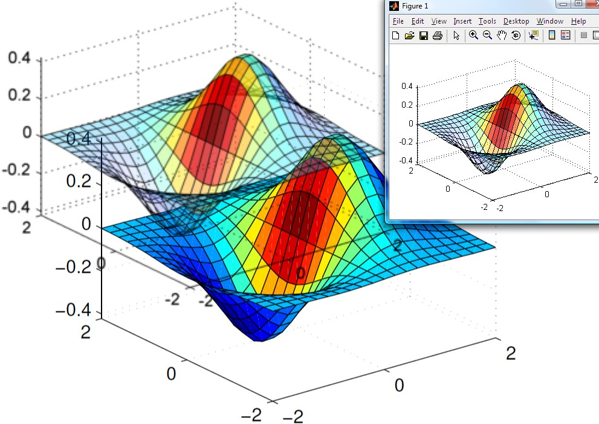
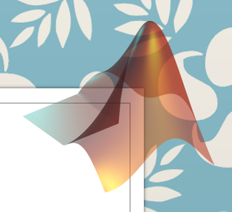
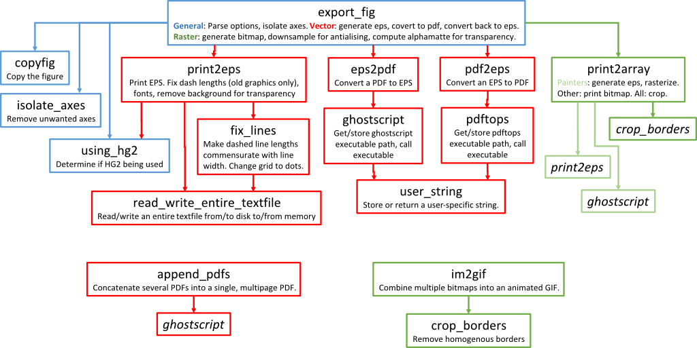
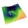

I would like to introduce guest blogger Oliver Woodford. For the past several years Oliver has been a top contributor on the Matlab File Exchange, and several of his utilities have earned the prestigious distinction as “Pick of the Week”. This is no easy feat in a File Exchange that hosts ~23K utilities at latest count. For the past few years, excluding short spans of time, Oliver’s export_fig was the File Exchange’s most downloaded utility, by a wide margin. export_fig has improved the output quality of figures for so many numerous Matlab users that it is hard to imagine a Matlab File Exchange without it. Today, Oliver describes the basic technical mechanisms underlying export_fig.
Yair has very kindly agreed to take over maintenance of export_fig. For his benefit, and anyone else’s interest, I will briefly describe the layout and functionality of the toolbox.
Before starting, I always recommend that new users read the README file, to get a better understanding of the available options, how the functions perform, how to do certain frequently-asked things, and what problems still remain. The following excerpt comes from the README file (please do read the entire file):
If you’ve ever wondered what’s going on in the icon on the export_fig download page (reproduced below), then this explanation is for you: The icon is designed to demonstrate as many of export_fig‘s features as possible. Given a figure containing a translucent mesh (top right), export_fig can export to pdf (bottom center), which allows the figure to be zoomed in without losing quality (because it’s a vector graphic), but isn’t able to reproduce the translucency, and also, depending on the viewer, creates small gaps between the patches, which are seen here as thin white lines. By contrast, when exporting to png (top left), translucency is preserved (see how the graphic below shows through), the figure is anti-aliased, but zooming-in does not reveal more detail.

export_fig demo usage (click for details)
Goals of export_fig
Publication quality
I wrote export_fig to produce nice looking figures for my PhD thesis and journal papers. The two standard MATLAB functions for exporting figures are saveas and print. Unfortunately, the quality of their default outputs just wasn’t good enough. For example, images in PDF outputs would be heavily compressed and I wanted control over image quality.
eps2pdf (which is part of the export_fig package) takes a quality setting as input, and converts this into suitable settings for ghostscript to convert the EPS file to a PDF, allowing users to get much higher fidelity output. In addition, ghostscript also crops the figure border to the EPS bounding box, and embeds fonts in the PDF. This last feature is obligatory for some publications, and export_fig is sometimes recommended by conferences or journals for this reason. Control of JPEG quality is achieved by passing the quality option to imwrite in export_fig.m.
In export_fig.m, I also added anti-aliasing for raster outputs (by exporting at a higher resolution and downsizing), and alpha-matting (by exporting with both black and white backgrounds to compute transparency) for PNG outputs. The alpha-matting feature allows textured backgrounds to show through the exported figure, which can be useful for presentation slides. Here is an image that demonstrates such alpha-matting:

Transparency alpha-matting
WYSIWYG (what you see is what you get)
Another issue with saveas and print is that, by default, they do not reproduce a figure exactly as it appears on screen. The dimensions change, the aspect ratio changes, the amount of whitespace changes, the background color changes, the axes ticks change, line dash lengths change, the fonts change, etc. All these changes are generally-undesirable side-effects of those functions.
export_fig avoids these changes to the figure, ensuring that it gets exported as faithfully as possible to the on screen visualization. export_fig uses print under the hood, but changes various figure and axes settings to get the desired result. For example, in export_fig.m I call
set(fig,'InvertHardcopy','off'), which ensures that the background color doesn’t change. I also set the axes Limits and Tick modes to'manual', to ensure that axes don’t change. Similarly, in print2eps.m, I callset(fig, 'PaperPositionMode','auto', 'PaperOrientation','portrait')to ensure that the figure dimensions don’t change for vector outputs.Two of the changes, line dash lengths and fonts, are caused by the Painters renderer, and so they only occur in vector output. The only way to fix these issues was to edit the EPS file that print generates: fix_lines.m changes the definition of dash lengths in the EPS file, so that the dash lengths depend on the line widths. Likewise, print2eps.m changes unsupported fonts in the figure to supported ones, then reinserts the unsupported font into the EPS. Unfortunately this doesn’t work so well when the two fonts have different character widths.
In addition to these features, the MATLAB rendering pipeline (in both HG1 and HG2 versions) is full of bugs. Many lines of code in export_fig are dedicated to circumventing these undocumented bugs. For example, lines 249-273 of today’s export_fig.m:
% MATLAB "feature": black colorbar axes can change to white and vice versa! hCB = findobj(fig, 'Type', 'axes', 'Tag', 'Colorbar'); if isempty(hCB) yCol = []; xCol = []; else yCol = get(hCB, 'YColor'); xCol = get(hCB, 'XColor'); if iscell(yCol) yCol = cell2mat(yCol); xCol = cell2mat(xCol); end yCol = sum(yCol, 2); xCol = sum(xCol, 2); end % MATLAB "feature": apparently figure size can change when changing colour in -nodisplay mode pos = get(fig, 'Position'); % Set the background colour to black, and set size in case it was changed internally tcol = get(fig, 'Color'); set(fig, 'Color', 'k', 'Position', pos); % Correct the colorbar axes colours set(hCB(yCol==0), 'YColor', [0 0 0]); set(hCB(xCol==0), 'XColor', [0 0 0]);
Similarly, lines 143-160 of today’s print2eps.m:
% MATLAB bug fix - black and white text can come out inverted sometimes % Find the white and black text black_text_handles = findobj(fig, 'Type', 'text', 'Color', [0 0 0]); white_text_handles = findobj(fig, 'Type', 'text', 'Color', [1 1 1]); % Set the font colors slightly off their correct values set(black_text_handles, 'Color', [0 0 0] + eps); set(white_text_handles, 'Color', [1 1 1] - eps); % MATLAB bug fix - white lines can come out funny sometimes % Find the white lines white_line_handles = findobj(fig, 'Type', 'line', 'Color', [1 1 1]); % Set the line color slightly off white set(white_line_handles, 'Color', [1 1 1] - 0.00001); % Print to eps file print(fig, options{:}, name); % Reset the font and line colors set(black_text_handles, 'Color', [0 0 0]); set(white_text_handles, 'Color', [1 1 1]); set(white_line_handles, 'Color', [1 1 1]);
Design philosophy
The export_fig toolbox is just a collection of functions. I put code into a separate function when either:
- One might want to use that functionality on its own, or
- That functionality is required by two or more other functions.
Subfunctions are used for code called multiple times in only one file, or where it improves legibility of the code.
The easiest way to understand the structure of the export_fig toolbox is to visualize the tree of function dependencies within the toolbox:

export_fig overview (click for details)
I’ll now describe what each function does in a bit more detail:
export_fig
This is the main function in the toolbox. It allows exporting a figure to several different file formats at once. It parses the input options. If only a subset of axes are being exported then it handles the transfer of these to a new figure (which gets destroyed at the end). It makes calls to print2array() for raster outputs, and print2eps() for vector outputs. For raster outputs, it also does the downsampling if anti-aliasing is enabled, and alphamatte computation if transparency is enabled. For vector outputs, it also does the conversion from eps to pdf, and also pdf back to eps. The reason for this last conversion is that the pdf is cropped, compressed and has the fonts embedded, and eps outputs should get this too (though I don’t think the font embedding remains).
print2array
This function rasterizes the figure. If the painters algorithm is specified then it calls print2eps(), then rasterizes the resulting EPS file using ghostscript. If another renderer is specified then this function just calls print() to output a bitmap. Finally, borders are cropped, if requested.
print2eps
This function calls print() to generate an EPS file, then makes several fixes to the EPS file, including making dash lengths commensurate with line width (old graphics system (HG1) only, i.e. R2014a or earlier), and substituting back in unsupported fonts.
crop_borders
Crops away any margin space surrounding the image(s): Given an image or stack of images (stacked along the 4th dimension), and a background color, crop_borders() computes the number of rows at the top and bottom and number of columns on the left and the right of the image(s) that are entirely the background color, and removes these rows and columns.
ghostscript
This function looks for a Ghostscript executable. or asks the user to specify its location. It then stores the path, or simply loads the path if one is already stored. It then calls the Ghostscript executable with the specified arguments.
fix_lines
This function makes dash lengths commensurate with line width, and converts grid lines from dashes to circular dots, in EPS files generated by MATLAB using HG1 (R2014a or earlier). fix_lines is also available as a separate File Exchange utility (selected for Pick-of–the-Week, just like export_fig). This function is no longer required in HG2 (R2014b or newer) – see below.
read_write_entire_textfile
Does what it says, reading or writing and entire text file from/to disk to/from memory, but handles errors gracefully, not leaving files open.
eps2pdf
This function converts an EPS file into a PDF file using Ghostscript.
pdf2eps
This function converts a PDF file into an EPS file using pdftops, from the Xpdf package.
pdftops
Does exactly the same thing as the ghostscript function, but for the pdftops executable instead.
user_string
This stores or loads user-specific strings in text files. This allows user-specific values to propagate across different versions of MATLAB, whilst avoiding these values being stored in version controlled code.
copyfig
This function simply creates a copy of a figure, like the built-in copyobj(). However, because the latter has some bugs, this function, which saves the figure to disk then opens it again, is required. Indeed, much of the code within the toolbox is simply circumventing bugs in MATLAB functions.
isolate_axes
This function removes unwanted axes from a figure. The approach to exporting a subset of axes is to copy the figure then remove the unwanted axes. Again, this is to circumvent bugs in the builtin function copyobj().
using_hg2
This function provides a robust way of checking if HG2 is in use (HG1 is the default in R2014a or older; HG2 is the default in R2014b or newer).
In HG2, the entire rendering pipeline has changed. While most of the features remain the same, the bugs have completely changed. For example, dash lengths in HG2 vector output are now sensible, so fix_lines is not required. However, in R2014b at least, patch-based graphics generate bloated EPS files, and line widths cannot go below 0.75pt. Finally, an obvious change for raster output is that it is smoothed by default, so anti-aliasing is not required; the default settings in the parse_args() function within export_fig.m reflect this.
append_pdfs
export_fig does have a
-appendoption, but this gets slower the larger the appended file becomes. A quicker way of generating a multipage PDF from several figures is to export them all to separate PDFs, then use this function to combine them into one in a single go. Also available as a separate File Exchange utility.im2gif
This function converts a stack of images, or a multi-image TIFF file, to an animated GIF. export_fig can generate multi-image TIFFs using the
-appendoption, making generating animated GIFs straightforward. Also available as a separate File Exchange utility.
And that’s it! All the functions have help text describing their input and output arguments.
Editorial notes
After several year of creating, improving and maintaining export_fig, Oliver is unfortunately no longer able to maintain this utility. As Oliver mentioned above, I (Yair) have volunteered to try to step into his shoes and maintain it. As Oliver’s detailed description (which barely scratches the surface) shows, this is certainly not a trivial utility. It will take me some time to get up to speed with all the internal technical details, so please be patient…
Readers interested in high-fidelity export might also consider using my ScreenCapture utility. Unlike export_fig, which uses Matlab’s builtin print function to generate (and fix) the output, ScreenCapture uses the standard java.awt.Robot.createScreenCapture()
to take an actual screen-capture of the requested figure, axes or
window area and then saves this to file/clipboard or sends it to the
printer. In a sense, the export_fig and ScreenCapture utilities nicely complement each other.
Related posts:
- Introduction to UDD UDD classes underlie many of Matlab's handle-graphics objects and functionality. This article introduces these classes....
- Multi-column (grid) legend This article explains how to use undocumented axes listeners for implementing multi-column plot legends...
- Plot markers transparency and color gradient Matlab plot-line markers can be customized to have transparency and color gradients. ...
- Plot line transparency and color gradient Static and interpolated (gradient) colors and transparency can be set for plot lines in HG2. ...
- Transparent uipanels Matlab uipanels can be made transparent, for very useful effects. ...
- Customizing axes part 4 – additional properties Matlab HG2 axes can be customized in many different ways. This article explains some of the undocumented aspects. ...
Pingback: Proper export for MATLAB figures | Labrigger
Great. Thank you for your contribution. I will work hard.

Matteo says:This is indeed an awesome function Oliver and Yair. Thanks for the great post, especially interesting from a design point of view.